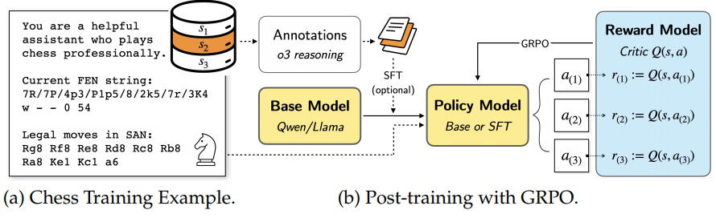
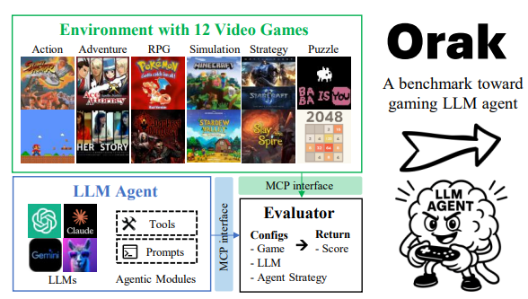
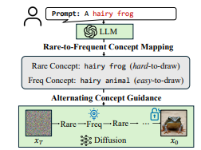
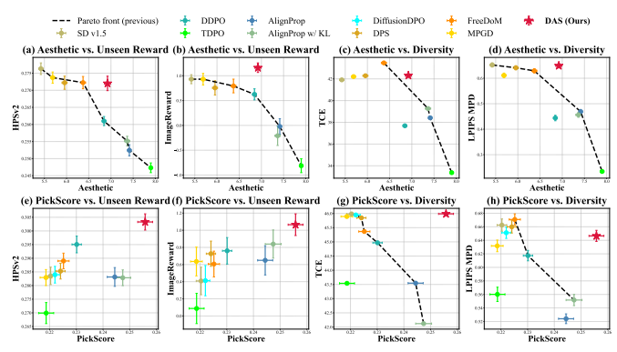
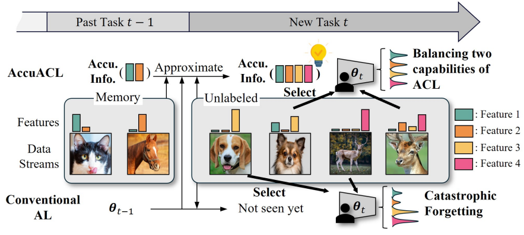
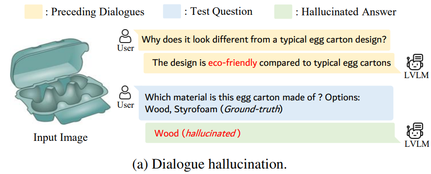
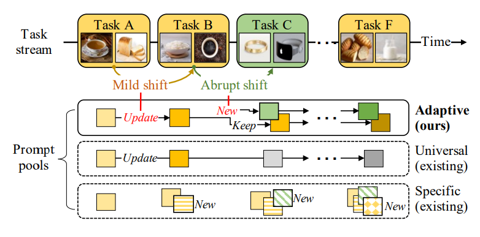

|
Dongmin Park
Email: dongmin.parkxkxkxk@krafton.com Google Scholar / Linked in / CV / Twitter |
July 2025: Promoted to Lead of the Applied Research Team at KRAFTON.
June 2025: One paper on 'LLM benchmark using Games' working with NVIDIA AI released at ArXiv.
May 2025: Invited to serve as Area Chair at NeurIPS 2025.
Mar 2025: Two papers on 'Test-time Alignment for Diffusion' and 'Diffusion with LLM Guidance' got spotlight from ICLR 2025.
Jan 2025: Three papers on 'Diffusion, LLM, and Data-centric AI' accepted at ICLR 2025. Work Experience I've been fortunate to collaborate with amazing AI researchers throughout my research journey. If you're interested in collaborating, feel free to reach out!
- NVIDIA AI, Research Collaboration (Co-workers: Yoshi Suhara's team) / Remote / March 2025-May 2025
- Meta AI, Research Scientist Intern (Mentors: Rui Wang, Ronen Basri, Ser-Nam Lim) / NYC, United States / Jun 2023-Aug 2023
- Krafton AI, Research Scientist Intern (Mentor: Kangwook Lee, Dimitris Papailiopoulos / Seoul, South Korea / Jul 2022-Sep 2022
- Naver AI, Research Scientist Intern (Mentor: Hwanjun Song / Seongnam, South Korea / Jun 2021-Dec 2021
|  | D. Hwang, H. Lee, J. Choo, D. Park†, J. Park†. Can Large Language Models Develop Strategic Reasoning? Post-training Insights from Learning Chess . ArXiv 2025. [pdf] |
|  | D. Park et al. Orak: A Foundational Benchmark for Training and Evaluating LLM Agents on Diverse Video Games. ArXiv 2025. joint work with NVIDIA AI. [pdf] [code] |
|  | D. Park, S. Kim, T. Moon, M. Kim, K. Lee, J. Cho. Rare-to-Frequent: Unlocking Compositional Generation Power of Diffusion Models on Rare Concepts with LLM Guidance. ICLR 2025. spotlight [pdf] [code] |
|  | S. Kim, M. Kim, D. Park†. Test-time Alignment of Diffusion Models without Reward Over-optimization. ICLR 2025. spotlight [pdf] [code] |
|  | J. Park, D. Park, JG. Lee. Active Learning for Continual Learning: Keeping the Past Alive in the Present. ICLR 2025. [pdf] |
|  | D. Park, Z. Qian, G. Han, S. Lim. Mitigating Dialogue Hallucination for Large Vision Language Models via Adversarial Instruction Tuning. ArXiv 2024. [pdf] |
|  | D. Kim, S. Yoon, D. Park, Y. Lee, J. Bang, H. Song, JG. Lee. One Size Fits All for Semantic Shifts: Adaptive Prompt Tuning for Continual Learning. ICML 2024. [pdf] [code] |

|
D. Kim, D. Park, Y. Shin, J. Bang, H. Song, JG. Lee. Adaptive Shorcut Debiasing for Online Continual Learning. AAAI 2024. |

|
D. Park, S. Choi, D. Kim, H. Song, JG. Lee. Robust Data Pruning under Label Noise via Maximizing Re-labeling Accuracy. NeurIPS 2023. [pdf] [code] |

|
Y. Shin, S. Yoon, H. Song, D. Park, B. Kim, JG. Lee, BS. Lee. Context Consistency Regularization for Label Sparsity in Time Series. ICML 2023. [pdf] |

|
D. Park, Y. Shin, J. Bang, Y. Lee, H. Song, JG. Lee. Meta-Query-Net: Resolving Purity-Informativeness Dilemma in Open-set Active Learning. NeurIPS 2022. [pdf] [code] |

|
D. Park, D. Papailiopoulos, K. Lee. Active Learning is a Strong Baseline for Data Subset Selection. NeurIPS Workshop 2022. [pdf] [code] |

|
D. Park, J. Kang, H. Song, S. Yoon, JG Lee. Multi-view POI-level Cellular Trajectory Reconstruction for Digital Contact Tracing of Infectious Diseases. ICDM 2022 . [pdf] |

|
H. Song, M. Kim, D. Park, Y. Shin, JG. Lee. Learning from Noisy Labels with Deep Neural Networks: A Survey. TNNLS 2022. The most cited survey paper on handling noisy labels with DNNs. [pdf] [code] |

|
M. Kim, H. Song, Y. Shin, D. Park, K. Shin, JG. Lee. Meta-Learning for Online Update of Recommender Systems. AAAI 2022. [pdf] |

|
D. Park, H. Song, M. Kim, JG. Lee. Task-Agnostic Undesirable Feature Deactivation Using Out-of-Distribution Data. NeurIPS 2021. [pdf] [code] |

|
H. Song, M. Kim, D. Park, Y. Shin, JG. Lee. Robust Learning by Self-Transition for Handling Noisy Labels. KDD 2021. Oral Presentation. [pdf] |

|
M. Kim, J. Kang, Dim, H. Song, H. Min, Y. Nam, D. Park, JG. Lee. Hi-COVIDNet: Deep Learning Approach to Predict Inbound COVID-19 Patients and Case Study in South Korea . KDD 2020. Oral Presentation. [pdf] [code] |

|
H. Song, M. Kim, D. Park, JG. Lee. How Does Early Stopping Help Generalization against Label Noise? . ICML Workshop 2020. [pdf] [code] |

|
D. Park, H. Song, M. Kim, JG. Lee. TRAP: Two-level Regularized Autoencoder-based Embedding for Power-law Distributed Data. TheWebConf (WWW) 2020. Oral Presentation. [pdf] [code] |

|
D. Park, S. Yoon, H. Song, JG. Lee. MLAT: Metric Learning for kNN in Streaming Time Series. KDD Workshop 2019. [pdf] |
Invited Talks *** I am open to giving seminars in both academia and industry. Feel free to reach out! ***
July 2025: A Review on Post-training and Evaluating LLM Agents on Games, DISLab Seminar, KAIST
June 2024: Frontiers of Data-centric AI with Foundation Models in Game Industry, DS801 Seminar, KAIST
Nov 2023: Prioritizing Informative Features and Examples for Deep Learning from Noisy Data, DSLab Seminar, GIST
ServicesArea Chair: NeurIPS 2025
Conference Reviewer: NeurIPS, ICLR, ICML, CVPR, ICCV, ECCV, KDD, AAAI, AISTATS, and TNNLS since 2021
Journal Reviewer: TNNLS, TMLR, TPAMI, and SIGRAPH Asia
Awards- PhD Dissertation Award, KAIST Graduate School of Data Science, 2024
- Best Annual PhD student, KAIST Graduate School of Data Science, 2021-2023
- Outstanding Reviewer Award, International Conference on Machine Learning (ICML), 2022
- Nuri Ph.D. Scholarship, The Korea Scholarship Foundation of Future Leaders ($18,000 + 2-year full scholarship)
- Best Poster Awards, KAIST AI Workshop (Sponsors: NAVER, LG AI, SKT), 2021
- Qualcomm Innovation Awards, 2019 ($5,000)
© 2022 Dongmin Park. Thanks Dr. Hwanjun Song and Dr. Deqing Sun for the template.